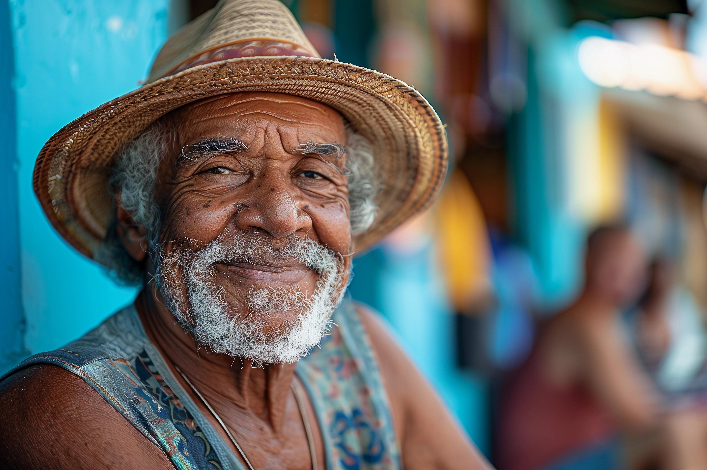
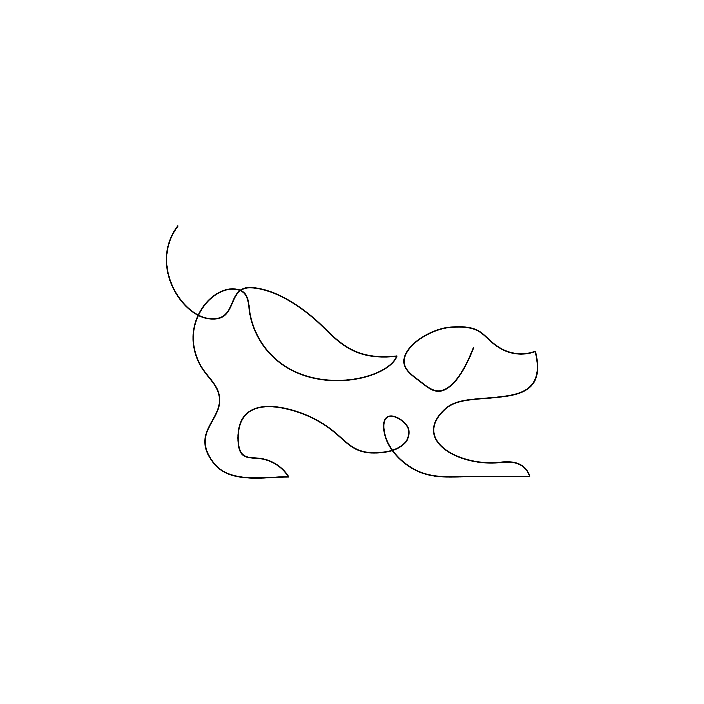
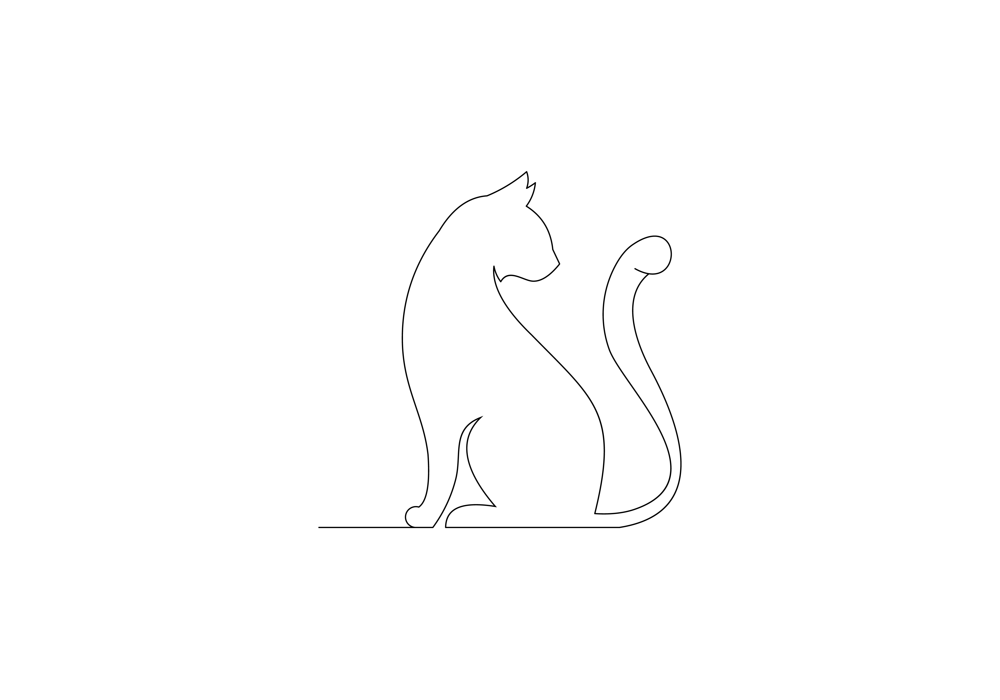
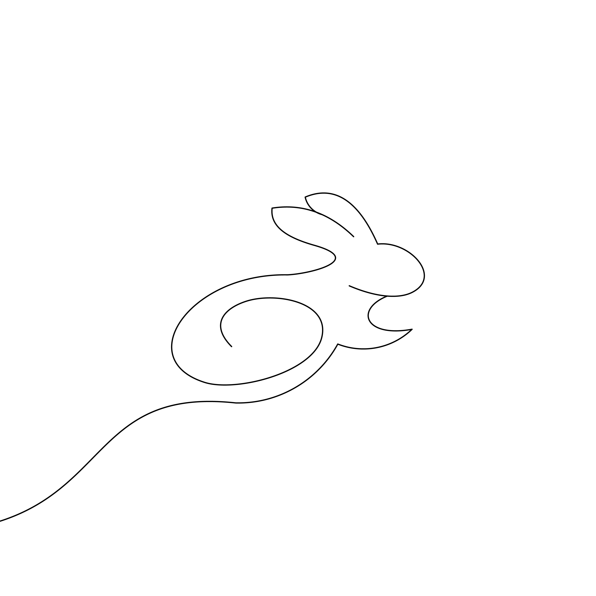

APOIADORES





"Resgatar um animal é dar a ele uma segunda chance e mostrar que o amor pode transformar até as situações mais dificies em novas oportunidades de felicidade."
"O amor por um animal é um vínculo profundo que transcende palavras, oferecendo lealdade, alegria e uma conexão que enriquece nossas vidas de maneiras indescritíveis."
"A esperança para um animal é a promessa de um futuro melhor, onde cada gesto de carinho e cuidado ilumina o caminho para um novo começo."
Para fins de comparação, a população pet no Brasil é de cerca de 144,3 milhões de animais, entre cães, gatos, peixes, aves e répteis e pequenos mamíferos. A maioria é de cachorros (55,9 milhões) e felinos (25,6 milhões), num total de 81,5 milhões de animais. Desses, 10,8% são Animais em Condição de Vulnerabilidade, o que representa os 8,8 milhões de pets.
Não estão incluídos entre os ACVs os animais resgatados por maus tratos e abandonados, que são aqueles que vivem por um determinado tempo sem um dono definido. A maioria dos pets abandonados e animais resgatados por maus tratos vive sob tutela de organizações não governamentais (ONGs).

Nas ruas desertas da cidade, há um silêncio doloroso que ecoa entre os prédios e as calçadas. É o silêncio das almas abandonadas, dos olhos que antes brilhavam com a esperança de um carinho e agora se perdem em um olhar vazio e triste. Animais que um dia foram parte de uma família, que conheciam o calor de um abraço e o conforto de um lar, agora enfrentam a crueldade do abandono.
A cada passo que dão pelas ruas frias e impiedosas, eles carregam não apenas a fome e o medo, mas o peso de um sentimento devastador: a traição de quem um dia jurou cuidar deles. Eles vagam em busca de um pedaço de comida, de um abrigo qualquer, enquanto a indiferença das pessoas que passam ao seu lado parece aprofundar ainda mais a dor que sentem.
Estamos fazendo a nossa parte pelos animais indefesos.
E você? Quer fazer parte?